“O grupo Deep Gray
Ocean
atua na área de divulgação de estudos há uma década, e por meio deste site busca espalhar
informações
sobre as problemáticas e de como cuidar desse recurso fundamental, o oceano.”
Com 9 mil km de extensão, a costa brasileira percorre 463 cidades, em 17 estados. Uma imensidão azul
que abriga ¼ da população brasileira em um ecossistema único com 3 mil km de recifes de corais e 12%
dos manguezais do mundo. Apesar dos recentes avanços de sua conservação no País, apenas 2% de toda
essa biodiversidade está protegida. Preocupado com a situação e motivado pela necessidade de
mudança, o grupo jornalístico Deep Gray Ocean busca analisar e transportar as mais diversas
informações sobre a vida marinha e sua condição para que assim motive as melhoras em âmbito
nacional.
Reconhecemos nossa responsabilidade na preservação do meio ambiente e provocamos você a pensar conosco o que podemos fazer para avançar ainda mais. Cuidar do meio ambiente é valorizar a vida em nosso planeta. E isso nós fazemos com total comprometimento em todas as nossas operações. Por meio do Programa Petrobras Socioambiental, contribuímos para a sustentabilidade do negócio, apoiando iniciativas que gerem valor para a companhia e para a sociedade.

A Blue Hope é um projeto que visa a questão da importância dos recifes artificiais...Saiba mais

O Coastal Care é um projeto que visa realizar a preservação das praia...Saiba mais
A Fundação Exploration é um projeto que visa educar e inovar na questão da educação dos jovens...Saiba mais
Projetos
Além da Deep Gray Ocean, a Petro Exploration também criou os projetos Blue Hope, Coastal Care e Fundação Exploration; nos quais cada um busca abordar diferentes temas para a conservação da vida marinha.
Este site utiliza cookies para garantir a melhor experiência. Para mais detalhes, leia nossa Política de Privacidade.